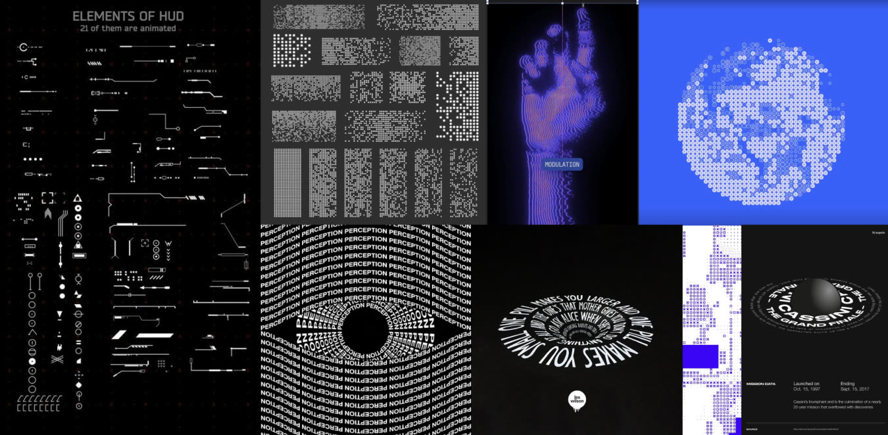
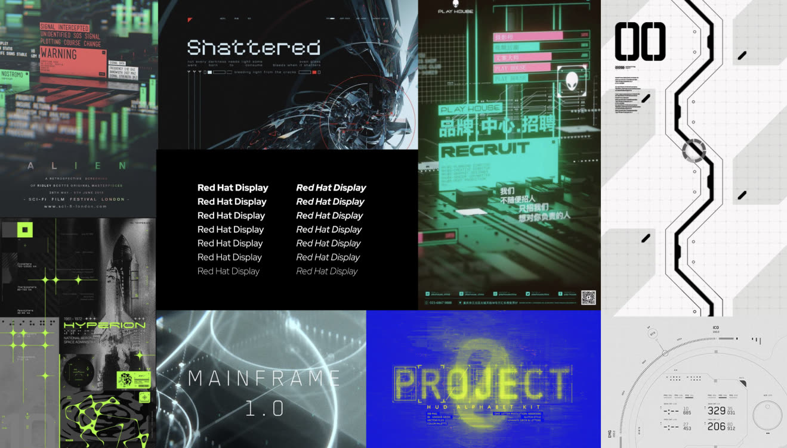
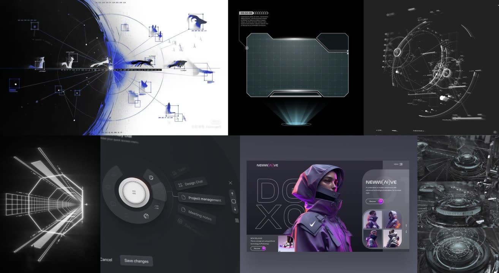
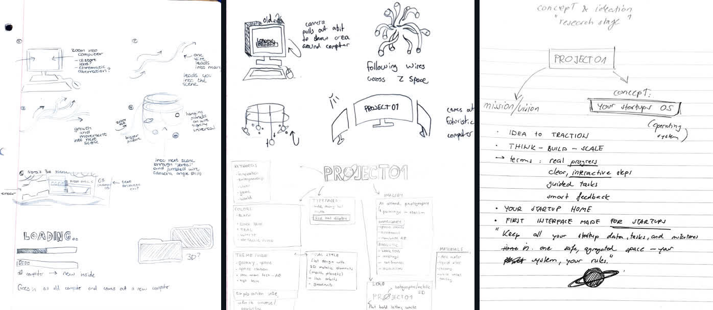
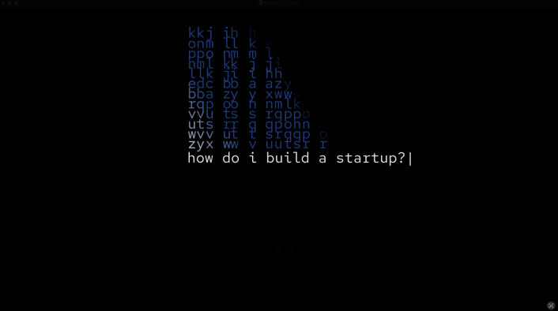
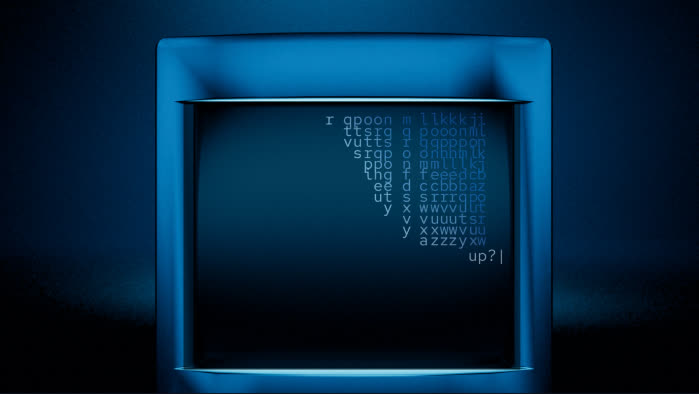
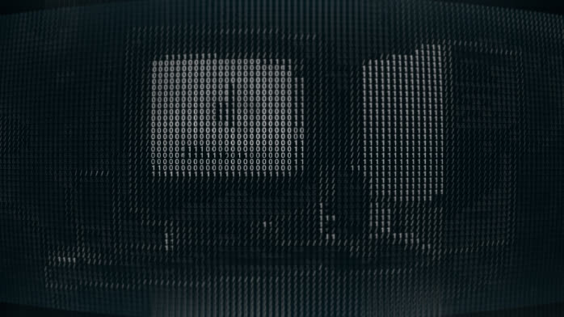
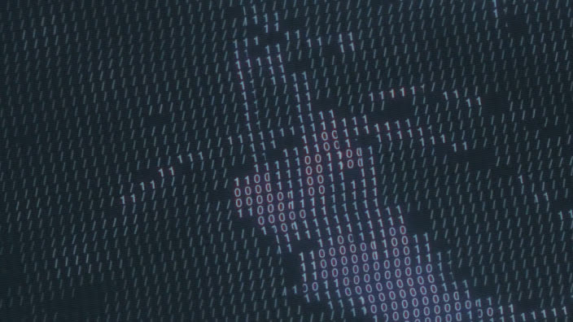
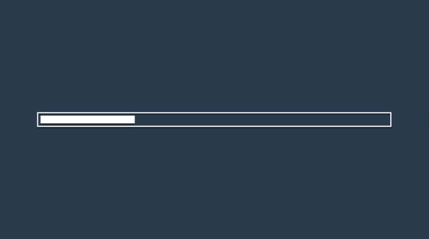
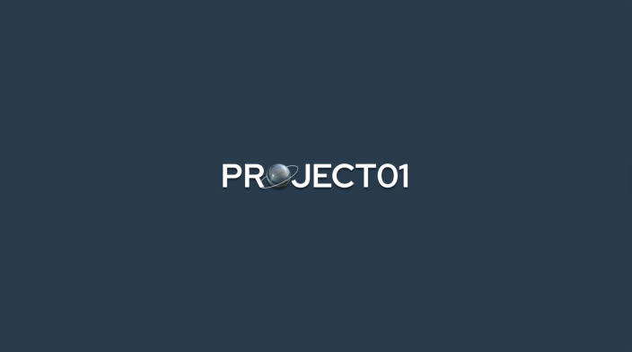

PROJECT01 is a startup platform designed to guide early-stage founders while giving investors transparent, real-time insight into progress. For founders, it feels like a gamified workspace powered by AI, helping them cut through uncertainty and keep moving. To investors, it’s a tool for spotting standout teams early.
The idea came from its student-founders, who saw how many early-stage teams were struggling to stay on track. Existing tools were either too generic or built mainly for investors, leaving a gap for something that could serve both sides at once. PROJECT01 was created to fill that gap: a workspace that is structured, motivating, and measurable.
02
About the Visual Identity
PROJECT01’s visual identity leans heavily into a digital, space-inspired aesthetic. The brand uses a black background with white typography as its foundation, accented with glowing gradients in electric blues. These accents give the brand a futuristic, retro-tech feel while remaining minimal and sharp.
Instead of polished photography, PROJECT01 relies on AI-generated and digitally filtered imagery, reinforcing its identity as tech-driven and experimental. The recurring planetary and cosmic metaphors — “your startup is a planet, PROJECT01 is a solar system” — position the brand as an entire digital universe for founders.
The overall look is underground yet elegant: hackerish, futuristic, and optimistic. By leaning into these aesthetics, PROJECT01 embraces technology rather than hiding it, presenting itself as a forward-facing platform built for tech-savvy founders.
The animation positions PROJECT01 as a startup operating system. Just as the platform serves as a digital foundation for founders, the animation unfolds like the system powering up.
Terminal windows, ASCII code, and liquid metal transitions represent the technical backbone of the brand, while smooth pacing and clean compositions reflect its optimistic and approachable tone.
Rather than softening or disguising the tech, the animation leans into it. The sequence shows the system coming to life: starting with raw computer elements, building toward structure, and finally expanding into a digital universe. This reflects their promise that every startup is a planet, and PROJECT01 is the universe that supports it.
Startup Operating System



Moodboards
04
Moodboards
Three boards: visual effects, typography, and immersiveness.
05
Sketches

06
Storyboard & Style Frames
Click any frame to see it larger.

Animated text on-screen

Camera shows computer

ASCII filter turns on

Camera flies into computer with filter on
Filter turns off inside computer, liquid metal inside
Liquid metal comes together in a spiral

Liquid metal becomes progress bar, motion cut

Finish downloading. Logo locked in place
07
Formats
The animation cut for three screen shapes. Hover for sound, or click to watch it larger.